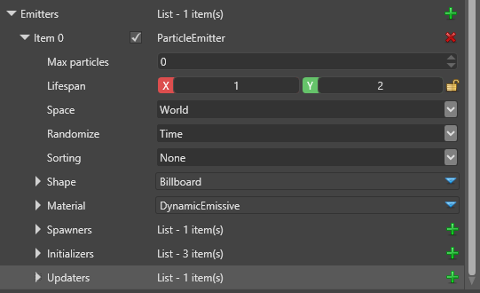

Эмитеры/Излучатели (Emitters)
Начинающий Художник Программист
Излучатели частиц управляют количеством частиц в эффекте, тем, как они появляются, движутся и исчезают, а также тем, как они отрисовываются. Например, эффект огня может состоять из трех отдельных эффектов частиц: пламени, углей и дыма. Каждый из этих эффектов управляется отдельным излучателем частиц.
Эмиттеры содержат дополнительные элементы управления, такие как генераторы (spawners), инициализаторы (initializers), и актуализаторы (updaters).

| Свойство | Описание |
|---|---|
| Имя излучателя (Emitter name) | Уникальный идентификатор излучателя частиц |
| Макс. количество частиц (Max particles) | Максимальное количество активных частиц, которыми излучатель может управлять в данный момент времени, рассчитывается на основе скорости появления частиц и продолжительности их жизни. Если оставить значение 0, Stride будет использовать собственную оценку. |
| Продолжительность жизни (Lifespan) | Новые частицы имеют продолжительность жизни между этими двумя значениями |
| Пространство (Space) | Частицы в мировом (world) пространстве остаются в мировом пространстве, когда излучатель удаляется от них. Частицы в локальном (local) пространстве всегда существуют в локальной системе координат излучателя; если излучатель движется, вращается или масштабируется, частицы движутся вместе с ним. |
| Случайный выбор (Randomize) | Частицы используют псевдослучайные значения для всего, что требует случайного выбора. Если вы установите значение Time, разные излучатели генерируют разные случайные числа. Если вы установите его на Fixed, разные экземпляры одного и того же эффекта ведут себя одинаково. Position действует как Fixed но различен для разных положений. |
| Приоритет рисования (Draw priority) | Контролирует порядок, в котором отрисовываются частицы. Более высокие числа имеют более высокий приоритет. Например, если этот эффект частиц имеет приоритет отрисовки 2, он будет отрисован после эффекта частиц с приоритетом отрисовки 1. |
| Сортировка (Sorting) | Рисовать частицы по глубине (depth) (подальше от камеры), возрасту (age) (частицы, созданные первыми, рисуются сверху), order (по порядку), или не по порядку none (подходит для аддитивных частиц, не требующих сортировки). |
| Форма (Shape) | Указывает форму, которая используется для рисования частиц. |
| Материал | Указывает материал, который используется для визуализации частиц |
| Генераторы (Spawners) | Генераторы контролируют скорость испускания новых частиц. Для испускания частиц излучатели должны иметь хотя бы один генератор. |
| Инициализаторы (Initializers) | Инициализаторы устанавливают начальные значения новых частиц |
| Актуализаторы (Updaters) | Актуализаторы обновляют живые частицы каждый кадр, изменяя их атрибуты. Актуализаторы выполняются в том порядке, в котором они указаны в списке. |